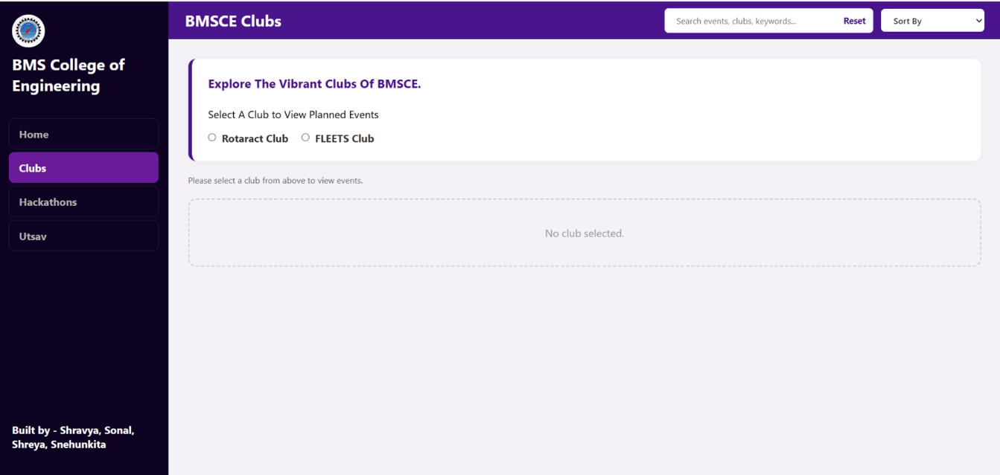
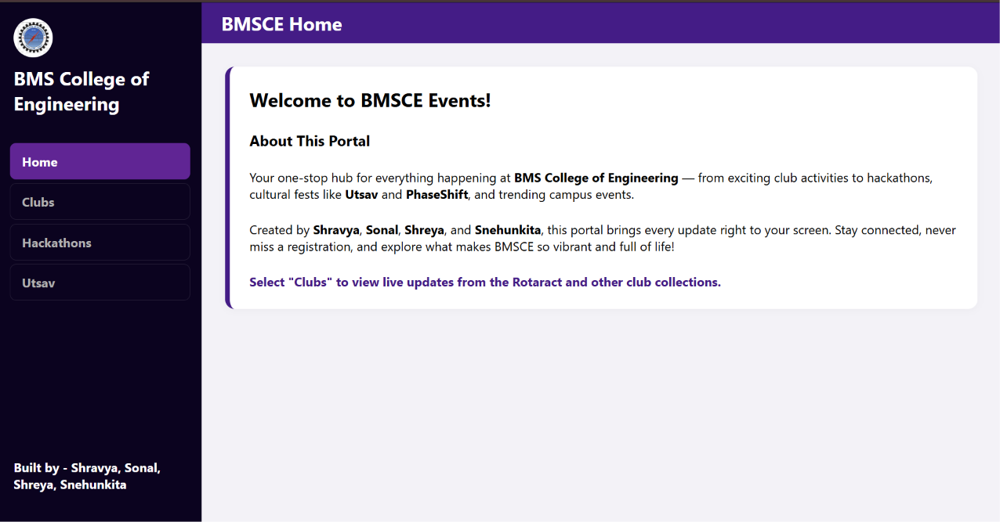
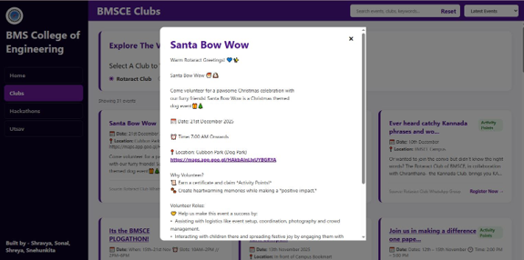
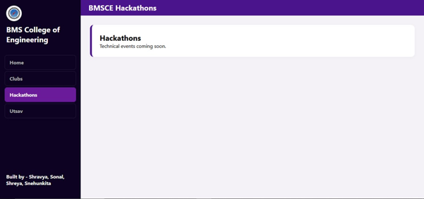
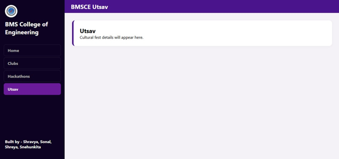

BMSCE Events Portal
A centralized platform for discovering college events and club activities.

A centralized platform for discovering college events and clubs.
The BMSCE Events Portal brings event and club information together in one place, making it easier for students to discover what's happening around campus.
Frontend · UI Implementation
HTML · CSS · JavaScript · Python
2026
College events and club activities were scattered across different places.
Event information was often shared through WhatsApp groups, club announcements and other separate sources. This made it difficult for students to discover events, keep track of activities and find information in one place.
One place to discover clubs, events and activities across campus.
The BMSCE Events Portal brings scattered event information into a centralized platform where students can explore clubs, discover events and view important event details more easily.
Making it easier for students to discover college clubs.
The portal organizes clubs in one place, allowing students to explore different organizations and discover the activities happening across campus.

Bringing upcoming events into one searchable experience.
Students can browse upcoming events and explore activities happening across different clubs and categories through a centralized event interface.

Giving students the information they need before attending an event.
Each event can be opened to view important information such as the event name, date, time, venue and organizing club, helping students understand the event before deciding to attend.

Organizing events into categories makes discovery easier.
The portal also groups events into different categories, helping students quickly explore the types of activities they are interested in.


Turning the portal concept into a clear and usable interface.
I worked on the frontend and UI implementation of the portal, focusing on creating clear layouts and making the event and club information easy to explore.
Built the user-facing interface for the events portal using HTML, CSS and JavaScript.
Translated the interface design into structured, functional web pages.
Designed and implemented layouts for discovering clubs, browsing events and viewing event information.
Structured the interface so content could be presented clearly across different screen sizes.
Designing for discovery means making information easy to find.
Working on the BMSCE Events Portal helped me understand how structure, navigation and visual hierarchy can make a content-heavy platform easier to use.
Learned how to organize large amounts of event information so users can find what they need more easily.
Learned how layout, spacing and typography can guide users through different types of content.
Learned how to translate a practical campus problem into a structured digital experience.
Taking the portal from a discovery platform to a complete event experience.
The current portal focuses on organizing and discovering college events. Future improvements could make the platform more connected, personalized and useful for students.
Allow authorized club members or administrators to create and manage event information.
Move from static data to a database for easier event management and updates.
Notify students about upcoming events, changes and important announcements.
Give students more ways to find events based on category, date, club and other preferences.